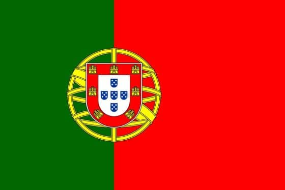

PORTUGAL 2022 SQUAD WORLDCUP
Portugal is a side filled with fantastic talents and will look to go as far as possible in the tournament.
The Navigators took the tough road to qualify for the World Cup but they do have the talent to go far in the tournament.
In this article, we will talk about the Portugal World Cup squad, their group fixtures, and the latest odds.

This might be the last World Cup dance for coach Fernando Santos as well as Portuguese superstar Cristiano Ronaldo.
The “Golden Generation” of Portugal is slowly but surely fading away and time is running out.
Even though they won the Euro Cup back in 2016 against favourites France,
Portugal has done little when it comes to the World Cup. Even though the Portugal World Cup squad has a lot of talent,
bookmakers don't put them among the favourites. They are currently backed at 14/1 (15.0) odds to win the World Cup.
It makes sense that gambling operators don't believe in them, after all, Portugal took the long road to qualify for Qatar 2022.
After finishing second in their group, Portugal had to play extra fixtures to qualify for the World Cup.
They went on to win against Turkey and Macedonia to clinch a spot for the finals tournament in Qatar.
Having been drawn into Group H with Uruguay, Ghana, and South Korea,
it won't be easy for Portugal to go through to the next phase. On paper,
Portugal is the favourite to top this group but the World Cup is a place where surprises happen all the time.
Ronaldo needs to lead this squad to the best of his abilities, just like he did back in 2016 when Portugal won the European Cup.
PORTUGAL 2022 WORLD CUP SQUAD
GOALKEEPERS: Diogo Costa (FC Porto), Rui Patrício (AS Roma), José Sá (Wolverhampton Wanderers)
DEFENDERS: João Cancelo (Manchester City), Rúben Dias (Manchester City),
Diogo Dalot (Manchester United), Raphael Guerreiro (Borussia Dortmund),
Nuno Mendes (PSG), Pepe (Porto), Danilo Pereira (PSG), António Silva (Benfica),
MIDFIELDERS: William Carvalho (Real Betis), Bruno Fernandes (Manchester United), João Mário (Benfica),
Otávio Monteiro (Porto), Rúben Neves (Wolverhampton Wanderers), Matheus Nunes (Wolverhampton Wanderers),
João Palhinha (Fulham), , Bernardo Silva (Manchester City), Vitinha (PSG
FORWARDS: João Félix (Atlético Madrid), Ricardo Horta (Braga), Rafael Leão (AC Milan), Gonçalo Ramos (Benfica),
Cristiano Ronaldo, André Silva (RB Leipzig)